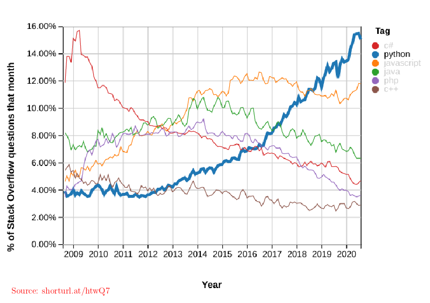
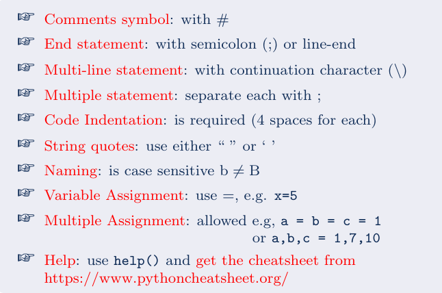
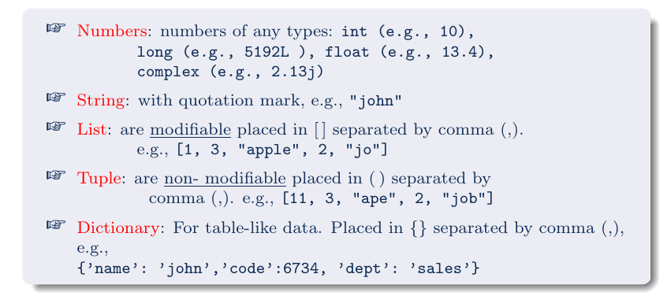
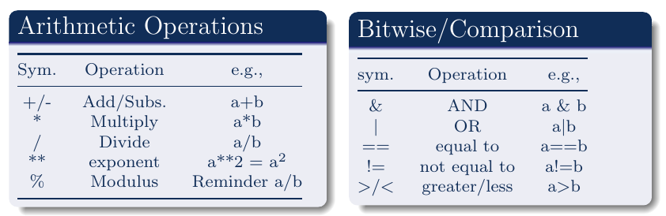
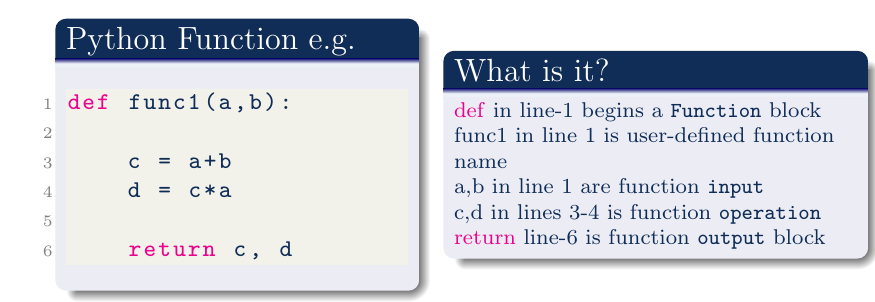

Python Programming language
Contents
1. Python Programming language#
1.1. What is it?#
Python is an open-source interpreted, high-level, general-purpose programming language. This means:
Interpreted/high-level language: This makes we avoid the nuances of fundamental coding as done by computer programmers/engineers.
General purpose programming language and Open-source ecosystem: This means it is extensible. Already over 200,000 Python packages are available (Check Here). Also, it means being free of cost.
For Groundwater: We can use Python packages such as Numpy (for numerical computing), Scipy (for scientific computing), Sympy (for symbolic computing), Matplotlib (for plotting) etc. for our computing and modelling in the course.
1.2. A bit of history of Python Programming language#
Python is now over 15 years old programming language. Its development can be traced from:
Guido van Rossum began developing Python in 1980 at Centrum Wiskunde & Informatica (CWI), the Netherlands. Its implementation (Python v.1) was released in 1994.
Python 2.0, released in 2000 became one of the most used general purpose programming language. Python 2.0 is now being replaced by Python 3.0 (from 2020).
Python 3.0 will be used in our class. It is not 100% compatible with earlier versions of Python.
Python name comes from the British comedy group Monty Python (Van Rossum enjoyed their show). The official Python documentation (Check here) also contains various references to Monty Python routines.
1.3. Why use Python Programming Language#
Many reasons but to put a few points here:
Python is a common tool among engineers, experts and researchers at universities and industry.
Python is system independent, therefore it is highly portable. Beside, it is a versatile (multi-purpose) language.
Python is incredibly flexible and can be adapted to specific local needs using enormous number of PACKAGES. Beside, it can easily interface with other languages e.g., C++, Java.
Python is under incredibly active development, improving greatly, and supported wildly by both professional and academic developers.
1.4. Python Language Popularity#
{kind=link}
Python has become a mainstream computing language.
Details of the plot are here.
This all means - it is good to learn to code in Python
1.5. Very basics of Python Programming#
Python is a very extensive language. To get started we learn the very fundamentals of the language.
Fundamentals of Python Programming Language
{kind=link}
Data Types in Python
{kind=link}
Basic operators in Python
Refer to Python documentation for complete description. Python documentation is very extensive and can be obtained from here
{kind=link}
A FUNCTION in Python
A function in a programming provide an ability to develop a reusable code-block with an option of several operations. This means, a function have input (or a set of input) and provide an (or a set of) output.
{kind=link}
Semicolon (:) in line 1 and Indentation after line 1 are required. def, return are Python keywords. There are quite few of them.
1.6. How much Python Programming should we know?#
This is probably the most important question. The clear answer at least for this course is that no programming has to be learned. This course do not expect any pre-coding skills. This course is intended for Basic Groundwater teaching, and that is the focus. But, how about learning groundwater by coding?
Eventually, the depth of programming to learn is an individual choice. This course considers programming as a tool to learn better.
In this course the codes can are written in a way so that it can be easily read. In addition, this interactive book will allow quite many of the code to be edited and executed in the book itself. For more advanced learning the popular notebook interface JUPYTER is to be used.
JUPYTER interface, on which interface this book is developed, is very briefly explained in the next section.